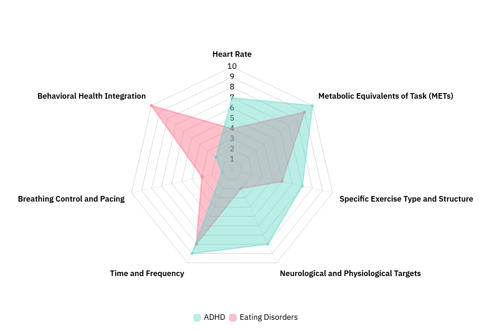

Exercise Px
Clinical exercise prescription
The 7 Specifiers Framework was designed to help researchers and clinicians describe, interpret, and compare exercise interventions in behavioral health. Reporting which specifiers were measured, held constant, or left unmeasured helps readers understand what participants did, interpret the findings, and reproduce the intervention.
Visit ExercisePx.comFor example, suppose 100 children with ADHD take part in a study comparing moderate and vigorous exercise. The researchers randomly assign which condition each child starts with, and the children alternate between conditions with a washout period between phases. In both conditions, they exercise for 30 minutes three days a week. The schedule is clear, but how hard did the children actually work? A child with a peak capacity of 18 METs may find the same treadmill pace easier than a child with lower aerobic capacity. Reporting the workload in METs alongside heart rate, perceived effort, and time at the target intensity would help readers see whether the two conditions produced different levels of effort.
Now suppose the moderate group walks on a treadmill and the vigorous group plays soccer. If attention improves more after soccer, was it the higher intensity, the need to track the ball and react to other players, or some combination of the two? If a clinician also coached one group through its sessions, that group received a different kind of support. Describing the activity and who supervised it gives readers a way to weigh those explanations and gives another team enough detail to repeat the study.
I used the radar diagram to show how different disorders and treatment goals can call for greater emphasis on some specifiers than others. For example, an exercise intervention for ADHD might prioritize the specifiers METs and Time, which keep participants engaged in movement for a sustained period. In eating-disorder care, the clinician specifier may matter more, as the focus is on rebuilding a person’s relationship with exercise when it has become tied to unrealistic goals about weight or appearance. The goal of the framework is to identify which specifiers deserve more or less emphasis for the clinical outcome the intervention is meant to achieve.
View the full-size radar diagram
